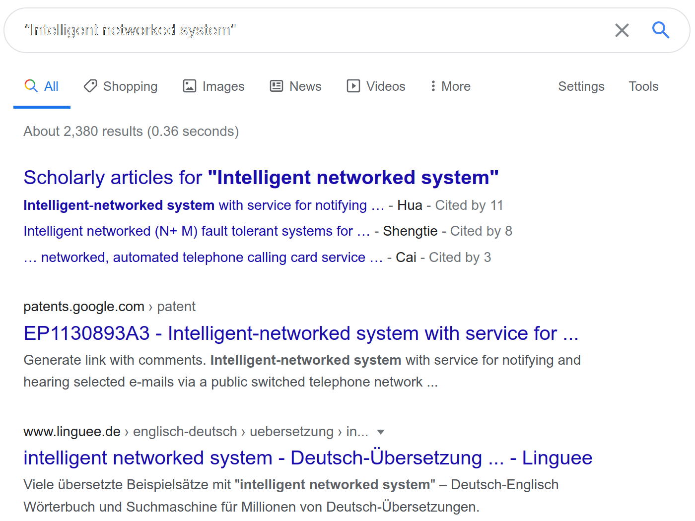
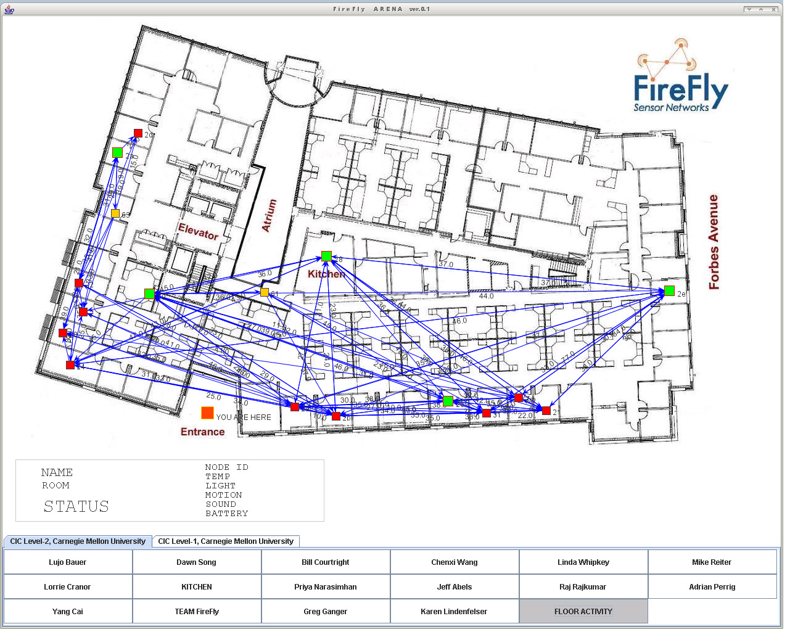
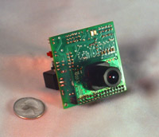
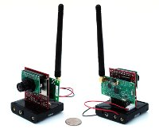
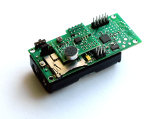
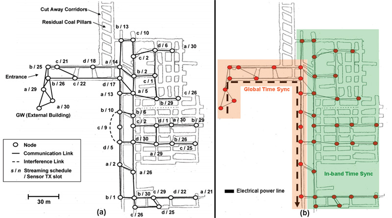

Introduction to Intelligent Networked System
Intelligent Networked System
What is Intelligent Networked System

Search Results
Search Results
Intelligent Networked System
30 Les Misérables 20 Victor Hugo 15 Jean Valjean 15 Javert 15 Fantine 15 Cosette 12 Éponine 12 Marius 12 Enjolras 10 Thénardiers 10 Gavroche 10 Bishop Myriel 10 Patron-Minette 10 God 8 ABC Café 8 Paris 8 Digne 8 Elephant of the Bastille 5 silverware 5 Bagne of Toulon 5 loaf of bread 5 Rue Plumet 5 revolution 5 barricade 4 sewers 4 Fex urbis lex orbis
Wireless Sensor Networks

Vision of Wireless Sensor Networks

Search Results





History of Wireless Sensor Networks
| Gen 1 (80s-90s) | Gen 2 (1999-2006) | Gen 3 (2010 and beyond) | |
| Size | Large shoe-box | Pack of cards | Dust particle |
| Weight | Kilograms | Grams | Negligible |
| Node | Separate sensing/comm | Semi-integrated | Fully integrated |
| Topology | Point-to-point, star | Client-server, peer-to-peer | P2P |
| Energy | Large batteries | AA batteries | Energy Harvesting |
| Life Time | hours/days/weeks | days to months | years |
| Deployment | Vehicle-placed, air drop | Hand placed | Embedded, “scattered” leave behind |
Internet of Things
Internet of things (IoT) is the inter-networking of physical devices, vehicles (also referred to as “connected devices” and “smart devices”), buildings, and other items embedded with electronics, software, sensors, actuators, and network connectivity which enable these objects to collect and exchange data.
In the real world, things matter more than ideas.
[Ashton], “That ‘internet of things’ thing”, 2009
Internet of Things Paradigm
Early History of Internet of Things
- 1973: Mario W. Cardullo receives the patent for first RFID tag
- 1982 Carnegie Mellon internet-connected soda machine
- 1991: HP introduces HP LaserJet IIISi: first Ethernet-connected network printer
- 1993: Internet-connected coffee pot at University of Cambridge (first internet-connected camera)
- 1999: LG Internet Digital DIOS refrigerator
- 1999: The term Internet of Things was coined
- 2005: United Nation’s International Telecommunications Union report predicting the rise of IoT for the first time
Trends
- Google Search Trends
- The Hype Cycle

Gartner Hype Cycle
Metcalfe’s law
- Number of Connected Devices v.s. Human Population
The value of a network goes up as the square of the number of users.
[Shapiro], “Information Rules”, 1998
\[ V \propto N^2 \]
Cyber-Physical Systems

Cyber-Physical System
CPSs refer to the next generation of engineered systems that require tight integration of computing, communication, and control technologies to achieve stability, performance, reliability, robustness, and efficiency in dealing with physical systems of many application domains.
[Kumar], Proceedings of the IEEE, 2012
Convergence of Computation and Control
- 1948: The term “Cybernetics” was coined by Norbert Wiener.
- 1970s: Real time system
- 1990s: Hybrid system
- 2006: The term “Cyber-Physical System” was coined by NSF.
Boeing 787 Incident
Convergence of Communication and Control
- 1971: ALOHAnet, first public wireless packet data network
- 1997: IEEE 802.11 (Wifi) was introduced
- 2000: Panel on Future Directions in Control, Dynamics, and Systems, Control in an Information Rich World:
Networks of sensory or actuator nodes with computational capabilities, connected wirelessly or by wires, can form an orchestra which controls our physical environment.
Convergence of Communication and Computation
- distributed systems
- cognitive radio
Applications
Driven Force
- New revenue streams (green energy solutions)
- Reducing costs (in-home patient healthcare)
- Reducing time to market (factory automation)
- Improving supply chain logistics (asset tracking)
- Reducing production loss (theft, spoilage of perishable)
- Increasing productivity (machine learning and data analytics)
- Cannibalization (Nest replacing traditional thermostats)
Manufacturing
Consumer
Retail
Healthcare
Energy
Transportation
Smart City
Technology Stack
Course Information
- Pre-requisites:
- 计算机语言与程序设计
- 计算机网络与应用
- Things that you will need to learn for the lab:
- Raspberry Pi
- GNU/Linux(Raspberry Pi OS)
- SSH
- Python
- Git
Course Instructor
- Mo, Yilin
- Office: FIT Building 3-613
- Office Hour: Wednesday 14:00-17:00
- Phone: 62792438
- Email: ylmo@tsinghua.edu.cn
- Pei, Xin
- Office: Central Main Building 809
- Office Hour: Wednesday 14:00-17:00
- Phone: 62795043
- Email: peixin@tsinghua.edu.cn
Teaching Assistant
- Lu, Yiwen
- Office: FIT Building 3-623
- Office Hour: Friday 14:00-17:00
- Phone: 62772430
- Email: luyw20n@mails.tsinghua.edu.cn
Tentative Lecture Schedule
| Lecture # | Date | Topics |
| 1 | 9/18 | Introduction, Sensor OS |
| 2 | 9/25 | Sensors, Actuators, Energy Harvesting |
| 3 | 9/27 | Lab 1: Raspberry Pi platform |
| 4 | 10/9 | Physical Layer |
| 5 | 10/16 | MAC Layer |
| 6 | 10/23 | Routing |
| 7 | 10/30 | Lab 2: Networking |
| 8 | 11/6 | Lab 3: Wireless Mesh Network |
| 9 | 11/13 | Security |
| Lecture # | Date | Topics |
| 10 | 11/20 | Clock Synchronization |
| 11 | 11/27 | Localization |
| 12 | 12/4 | Big Data, Cloud Computing |
| 13 | 12/11 | Smart Transportation System |
| 14 | 12/18 | Applications |
| 15 | 12/25 | Lab 4: Project |
| 16 | 1/1 | Project Demonstration |
Grading Criteria
- Quizzes (4 total): 20%
- Lab Assignment: 20%
- Final Project: 60%
- Demo: 20%
- Report: 40%
- Pass/Fail
Quizzes
- Four in-class, closed-book quizzes
- Spread throughout the semester
- Announcement will be one week ahead of time (with reading assignment)
- The questions will be based on the reading assignment.
Lab Assignments
- Three lab assignments at the first half of the semester
- Location: Central Main Building 510
- Goal: Get familiar with Raspberry Pi and networking protocols
- Installing Raspberry Pi OS, SSH, Light Sensor, LED
- Distributed “Whack-a-Mole”
- Wireless Mesh Network
Project
- Carried out in teams of 3 students.
- The code should be hosted on Tsinghua Gitlab Repo
- We will review the code contribution
- Each group will be given 3 Raspberry Pis, Sensors + LED, SD cards and other accessories
- Take good care of the equipment
- Buying additional hardware
- Write a proposal with a budget (Typically < 1,000)
- We will review the proposal and buy the HW
- A project list will be presented and discussed in detail
- Example:
- Developing an ad-hoc sensor network of 5+ nodes via Wifi and a front-end to show the sensor readings
- Completing the tasks in Lab 2 while running RPI on bare metal
- …
- You are encourage to propose your own project and discuss with us
- Combining it with your final year project!
- Grading Criteria:
- 66%: Final Report
- 33%: Demonstration
Bibliography
- [Ashton] Kevin Ashton, That ‘internet of things’ thing, RFID Journal 22, 97-114 (2009).
- [IoT2018] Parry Lea, Internet of Things for Architects, Packt Publishing, 2018.
- [Kumar] Kim & Kumar, Cyber-physical systems: A perspective at the centennial, in: Proc. IEEE, 2012.
- [Shapiro] Carl Shapiro & Hal Varian, Information Rules: A Strategic Guide to the Network Economy, Harvard Business School Press, 1998. https://books.google.com/books?id=aE_J4Iv_PVEC&printsec=frontcover&dq=inauthor:shapiro+inauthor:varian#v=onepage&q&f=false
License Information
Except where otherwise noted, the work “Introduction to Intelligent Networked System”, © 2017-2020 Mo, Yilin, is published under the Creative Commons license CC BY-SA 4.0.
In particular, trademark rights are not licensed under this license. Thus, rights concerning third party logos (e.g., on the title slide) and other (trade-) marks (e.g., “Creative Commons” itself) remain with their respective holders.